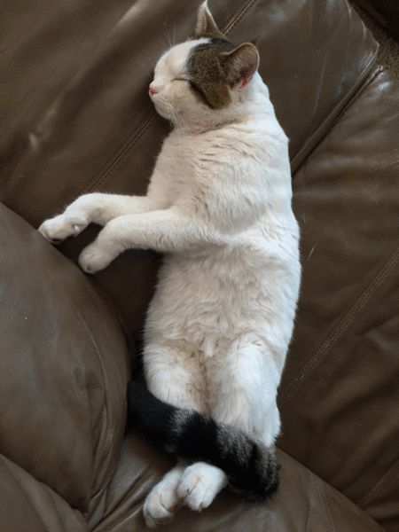
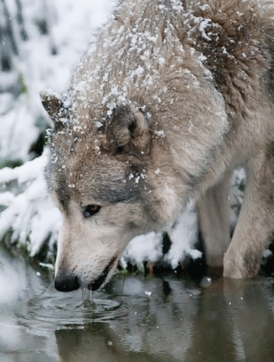
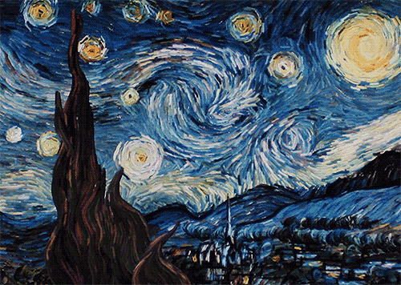
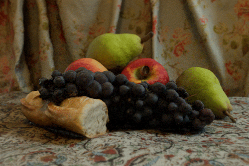
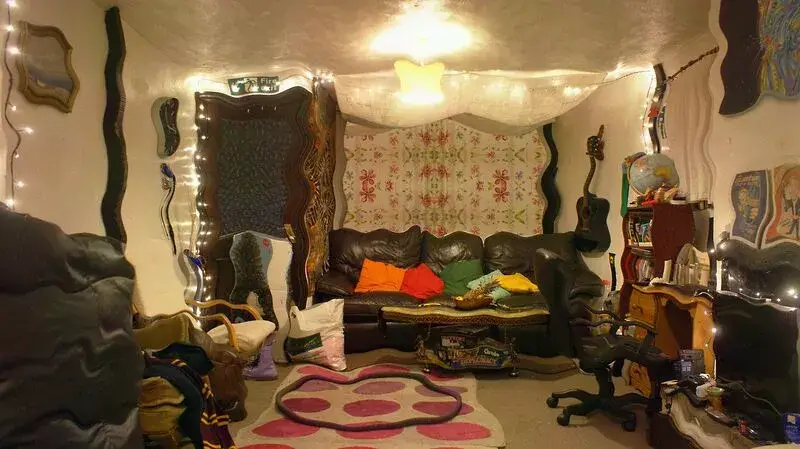

Drifting
Drifting is defined as the experience of the texture, shape, and general structure of objects and scenery appearing progressively warped, melted, and morphed across themselves.[1][2][3] These alterations gradually increase in intensity as a person stares, but are temporary and will reset to their normal appearance the moment a person double takes.
Drifting is often accompanied by other coinciding effects such as symmetrical texture repetition and tracers.[1][4] It is most commonly induced under the influence of moderate dosages of psychedelic compounds, such as LSD, psilocybin, and mescaline. However, it can also occur to a lesser extent under the influence of certain stimulants and dissociatives such as MDMA or 3-MeO-PCP.
The particular style of this visual effect depends on the specific continuously changing direction, speed, and rhythm of the distortion. This results in a small variety of different manifestations which are defined and listed below:
Morphing
Morphing can be described as a style of visual drifting which is completely disorganised and spontaneous in both its rhythm and direction. It results in objects and scenery appearing to change gradually, morph, and warp in their size, shape, and configuration.
Breathing
Breathing can be described as a style of visual drifting which results in objects and scenery appearing to steadily contract inwards and expand outwards in a consistent rhythm, similar to the lungs of a living organism.
Melting
Melting can be described as a style of visual drifting which results in the texture of objects and scenery appearing to completely or partially melt. It begins at lower intensities as a gradual distortion of an object's texture which causes them to subtly droop, wobble, and lose their structural integrity. This gradually increases until it becomes impossible to ignore as the lines, textures, and colour between solid objects melt into one another in an extremely fluid style.
Flowing
Flowing can be described as a style of visual drifting which seems to occur almost exclusively on textures (particularly if they are highly detailed, complex, or rough in appearance). It results in the textures appearing to flow like a river in a seamless, looped animation. It is particularly common on wood grain or the fur of animals.
Image examples
    Psychoactive substances
Compounds within the psychoactive substance index which may cause this effect include:
Experience reports
External links